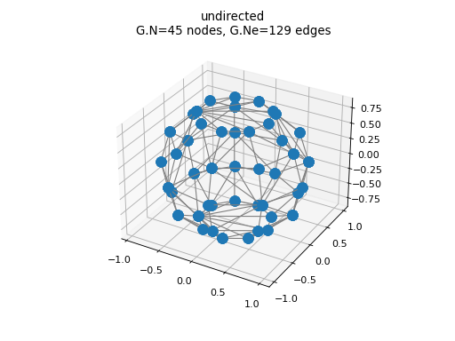
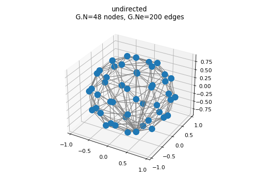

Tessellation Graphs¶
Routines for building graphs from tessellations/point sets in \(\mathbb{R}^3\).
cvxhull_graph(R[, cheb_normalized, …])Build the convex hull graph of a point set in \(\mathbb{R}^3\).
healpix_nngraph(nside[, cheb_normalized, …])Build the nearest neighbour graph of a HEALPix spherical point set.
-
cvxhull_graph(R: numpy.ndarray, cheb_normalized: bool = True, compute_differential_operator: bool = True) → Tuple[pygsp.graphs.graph.Graph, float][source]¶ Build the convex hull graph of a point set in \(\mathbb{R}^3\).
The graph edges have exponential-decay weighting.
Definitions of the graph Laplacians:
\[L = I - D^{-1/2} W D^{-1/2},\qquad L_{n} = (2 / \mu_{\max}) L - I\]- Parameters
- Returns
G (
Graph) – Ifcheb_normalized = True,G.Lnis created (Chebyshev Laplacian \(L_{n}\) above) Ifcompute_differential_operator = True,G.Dis created and contains the gradient.rho (float) – Scale parameter \(\rho\) corresponding to the average distance of a point on the graph to its nearest neighbors.
Examples
import numpy as np from pycgsp.graph import cvxhull_graph from pygsp.plotting import plot_graph theta, phi = np.linspace(0,np.pi,6, endpoint=False)[1:], np.linspace(0,2*np.pi,9, endpoint=False) theta, phi = np.meshgrid(theta, phi) x,y,z = np.cos(phi)*np.sin(theta), np.sin(phi)*np.sin(theta), np.cos(theta) R = np.stack((x.flatten(), y.flatten(), z.flatten()), axis=-1) G, _ = cvxhull_graph(R) plot_graph(G)
(Source code, png, hires.png, pdf)
Warning
In the newest version of PyGSP (> 0.5.1) the convention is changed:
Graph.Dis the divergence operator andGraph.D.transpose()the gradient (see routine Graph.compute_differential_operator). The code should be adapted when this new version is released.
{kind=link}
{kind=link}
-
healpix_nngraph(nside: int, cheb_normalized: bool = True, compute_differential_operator: bool = True) → Tuple[pygsp.graphs.graph.Graph, float][source]¶ Build the nearest neighbour graph of a HEALPix spherical point set.
The graph edges have exponential-decay weighting.
Definitions of the graph Laplacians:
\[L = I - D^{-1/2} W D^{-1/2},\qquad L_{n} = (2 / \mu_{\max}) L - I\]- Parameters
nside (int) – Parameter NSIDE of the HEALPix discretisation scheme.
cheb_normalized (bool) – Rescale Laplacian spectrum to [-1, 1].
compute_differential_operator (bool) – Computes the graph gradient.
- Returns
G (
Graph) – Ifcheb_normalized = True,G.Lnis created (Chebyshev Laplacian \(L_{n}\) above) Ifcompute_differential_operator = True,G.Dis created and contains the gradient.rho (float) – Scale parameter \(\rho\) corresponding to the average distance of a point on the graph to its nearest neighbors.
Examples
from pycgsp.graph import healpix_nngraph from pygsp.plotting import plot_graph G, _ = healpix_nngraph(nside=2) plot_graph(G)
(Source code, png, hires.png, pdf)
Warning
In the newest version of PyGSP (> 0.5.1) the convention is changed:
Graph.Dis the divergence operator andGraph.D.transpose()the gradient (see routine Graph.compute_differential_operator). The code should be adapted when this new version is released.
{kind=link}
{kind=link}